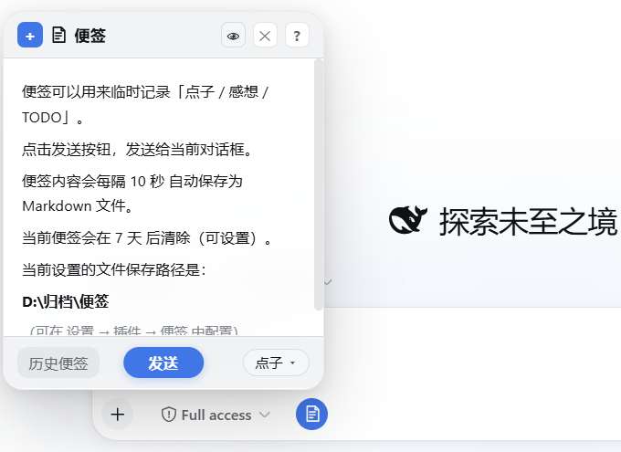
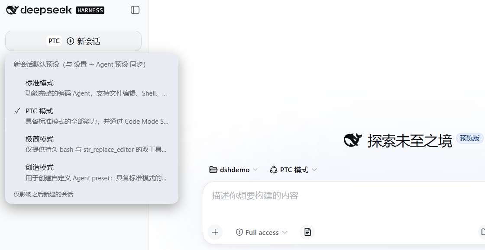

DSH 上线之后我做的几个小工具
DSH 上线之后陆陆续续折腾了几个小工具：便签、新会话按钮内可切换模式、Alt+Space最小化或唤起窗口。都是自己用着顺手的东西，整理一下放在这里。
顺便整理了我对DSH的“四种模式”的简单理解。
dsh-sticky-note：便签
github.com/Meredith2328/dsh-sticky-note
类似微软原生的便签功能的DSH集成版，支持一些Markdown语法，并且可以快速发送给DSH。

是输入框工具栏左边的一个便签按钮，打开是一个可以拉伸的小面板。
随手记点子/感想/TODO，实时保存到归档目录。
- Markdown 预览和一套编辑快捷键
- 一键发送到对话
- 存储是按 点子/感想/TODO/归档 四个子目录分类，落在本地目录里
- 设置里可以修改许多的定制项，比如目录保存在哪里、多久自动保存一次、多久自动删除不用的便签
顺便合到几个awesome的pr里啦，欢迎大家用用看。
dsh-sidebar-mode：把模式切换塞进「新会话」按钮
github.com/Meredith2328/dsh-sidebar-mode
把默认的四种模式切换塞进「新会话」按钮里，新会话创建更方便。

我发现我使用的过程中，根据自己需求、在创建新会话之前首先切换到合适的模式，这样用得还挺频繁。所以做了这样一个小插件，实现这个功能。
这个小显示和设置里的“Agent预设”，以及新会话里的模式切换都是双向同步的。
dsh-hotkey：Alt+Space 唤起 DSH
github.com/Meredith2328/dsh-hotkey
Alt+Space 一键唤起 / 最小化 DeepSeek Harness 的窗口。
找不到窗口就自动打开 DSH 地址。
为什么是独立小工具，而不是 skill / MCP / 插件：
- skill 只是一份给 Agent 的指令文本，不能常驻监听按键。
- MCP / Cordis 插件跑在 Harness 自己的进程或页面里，管不到窗口的最小化 / 恢复，更注册不了操作系统级全局热键。
- 全局热键 + 窗口管理必须由 OS 层的常驻进程来做，所以最合适的形式就是一个极小的 Windows 可执行程序（C# 编译，无需安装任何运行时）。
我对 DSH 默认的四种模式的理解
顺便整理了一下我对 DSH 四种模式的理解，省流如下。
| 模式 | 描述 | 备注 |
|---|---|---|
| 标准模式 | 随便用 | |
| PTC模式 | 类似标准模式，这个更适用于需要并行读一堆文件的场景 | 比如一个大的代码库，或者整理很多资料文件 |
| 极简模式 | 略 | 既然官方benchmark是在这个模式训的，不知道这个模式是不是适配性更好、比别的模式能力强一点 |
| 创造模式 | 适用于你想改造DSH，例如自己折腾插件等等 | 我觉得暂时来说，满足折腾需求的比例更多，对开发使用的助益取决于你的折腾的投入产出是否适合你自己 |
评论